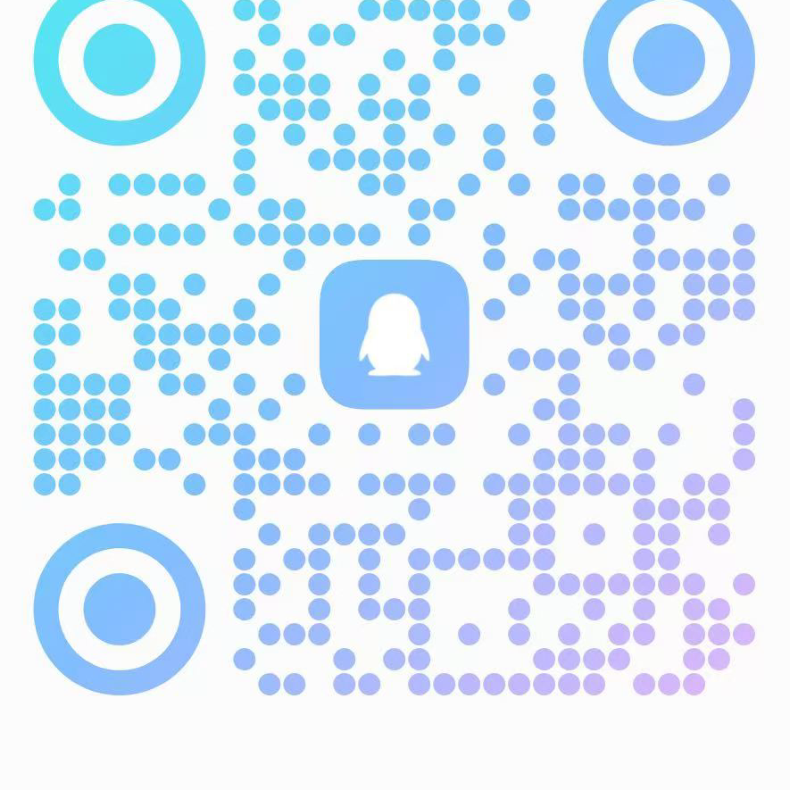

加入 QQ 群
使用本页公开群号进群。群用于查找商品方向，不替代店铺订单页面。
QQ 群内查货
加入 QQ 群后，直接 @机器人 输入想找的工具或用途词。机器人帮助定位当前有货的店内商品入口，减少反复翻找；具体价格、库存和交付说明始终以店铺页面为准。
使用方法
不需要记很多分类。先写出你要找的工具或需求，机器人按店内现有分类和当前有货商品帮助定位入口。
使用本页公开群号进群。群用于查找商品方向，不替代店铺订单页面。
例如输入 Plus、Claude、Codex 或其他明确的工具、用途词。
根据机器人返回的入口查看实时价格、库存、交付说明与下单信息。
可以这样问
下列只是示例。机器人只展示当前有货的店内商品；结果会随库存和店铺内容变化。
公开入群入口
优先使用 QQ 扫一扫识别右侧二维码；如无法扫码，再复制群号搜索。进群后发送 @机器人 加需求词；不要仅发空消息。实际价格、库存和交付说明以店铺页面为准。
QQ群：1104198281
常见问题
不会。机器人只用于查找当前有货的店内商品入口；实际价格、库存、交付说明和购买操作均以店铺页面为准。
商品的在售和库存状态会变化，机器人返回的是当前同步到的有货商品范围。
不代表。页面中的第三方名称仅用于说明服务方向和搜索分类，相关商标归各自权利人所有。
公开说明：本页不展示后台地址、对接码、Token、Cookie 或其他敏感信息；第三方产品名称不代表官方合作或授权。